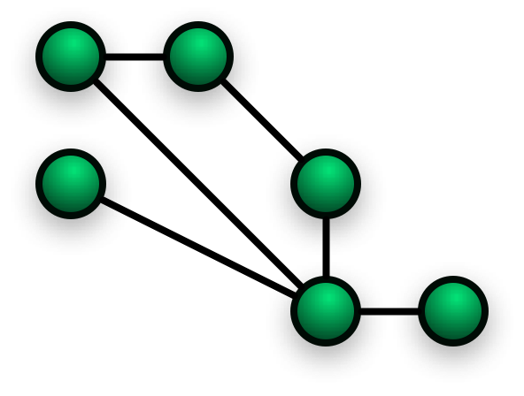
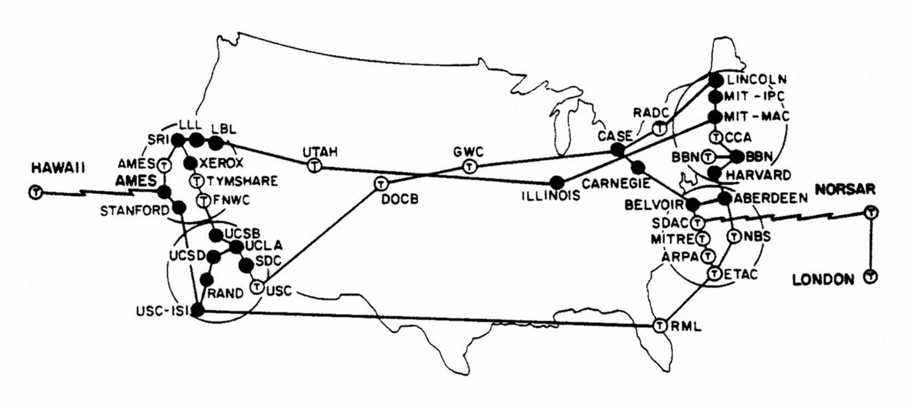
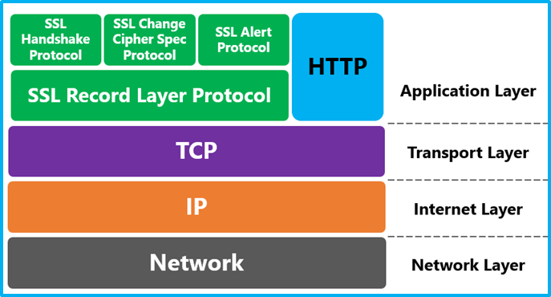
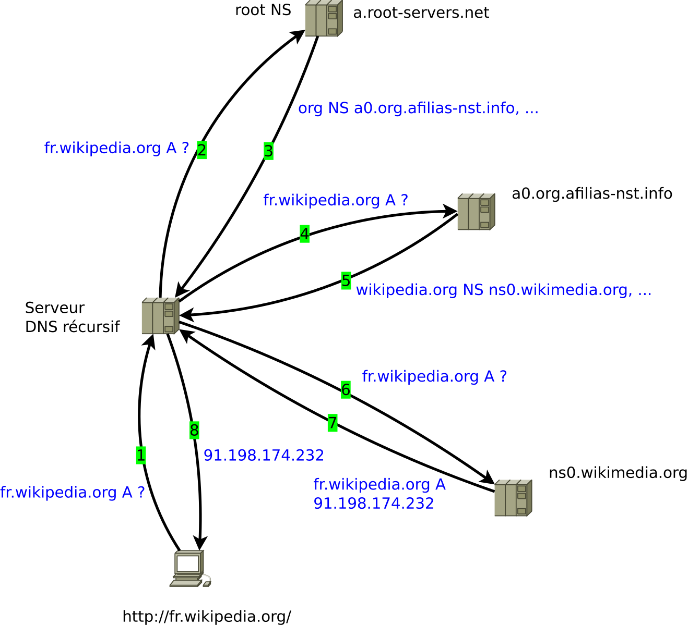
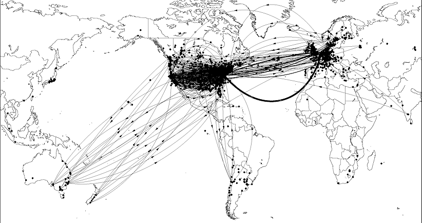
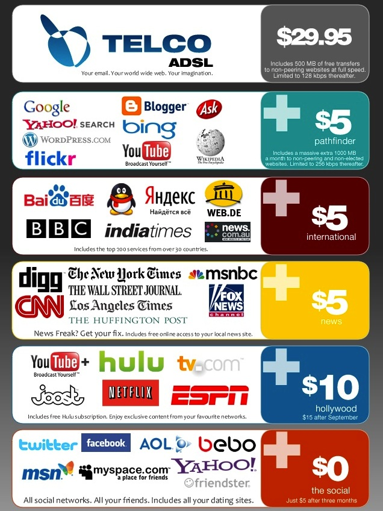
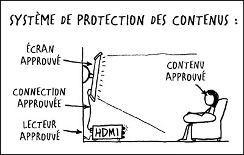
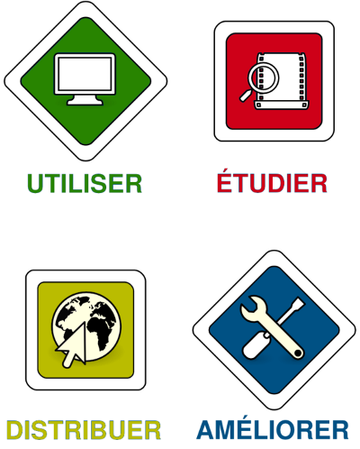
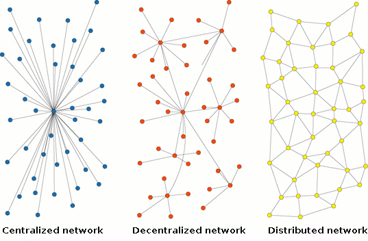

Réseau Libre
Réseau sans-fil communautaire
Infrastructure ouverte

reseaulibre.ca
@ReseauLibre @PeerProd @MathieuLutfy
Plan
- L'histoire de l'Internet en 5 minutes
- Motivations de Réseau libre
- Réseau maillé
- Gouvernance
- Défis
« routeur de paquets »
Courte histoire de l'Internet...
ARPANET 1970

ARPANET 1973
ARPANET 1982

1983 : TCP/IP remplace NCP
1984 : DNS
1991 : WWW
Internet Society (ISOC) 1992
NFSNET 1993
1994 : privatisation de NSFNET
- UUNet (Verizon/MCI), Sprint, AT&T, Level3
1995 : Culture populaire
1995 : https (SSL)
Motivations de réseau libre
La neutralité d'internet
Computation universelle & «DRM»
Les logiciels libres
-

- Un logiciel libre garantit aux utilisateurs ces libertés :
- 0 : exécuter pour tous les usages
- 1 : étudier et modifier
- 2 : redistribuer des copies
- 3 : ainsi que des copies modifiées
Culture de lecture & d'écriture
Culture du Remix
VS
Produit consommé
Respect de la vie privée
(Sécurité / Anonymat)
Minimum d'intermédiaires transparents
Internet était conçu pour être décentralisé
- Allocation IP (IANA)
- BGP
- DNS
- SSL
- Tier-1.
Dans notre jeune temps...
Dans notre jeune temps...
- modem téléphoniques et BBS
- choix de fournisseur d'accès à Internet
- Fidonet, Usenet
- Réseaux adhoc, copy-party.
Hackers (1990)
vs
Hackers (2000-2010)
- Réactions démesurées
- Incompréhension et perception de perte de contrôle
Inspiration ...
- FACIL / Linux-Québec (1997)
- Ile sans fil (2001)
- Foulab (2008)
- Un Québec Branché sur le monde (UQBM)
- Communautique
- Réseau libre (2012-02-15).
Un réseau maillé?
- indépendant
- local
- décentralisé
- non-commercial
- débuté en 2012
- ~20 bénévoles
- ~30 noeuds (47 aujourd'hui)
- Étudiants
Politiques
- Consensus
- Propositions par courriels
- Logiciels libres
5 libertés
- Free Network Foundation
- Participer
- Où les données sont stockées
- Avec qui partager
- Sans interférence
- Identité / anonymat
Picopeer agreement
- Transit libre
- Communication ouverte
- Aucune garantie
- Conditions d'utilisation
Comment ça marche ?
- Antennes omnidirectionnelles
- Routeurs avec OpenWRT
- Logiciel embarqué personnalisé (Commotion)
- Permet d'utiliser du matériel bon marché (~ 150 $)
- Ubiquity, TP-Link, etc.
- Poser plein d'antennes sur des toits différents
- 70% locataires à Montréal
Comment ça marche (suite)
- Bandes radio publiques 900Mhz, 2.4 & 5 Ghz
- Réseaux sans fil "ad-hoc" 802.11n
- Routage décentralisé avec Babel
- Adresses IPv6 assignées automatiquement
IPv6 ?
Adresse IPv4 : 173.194.43.73
Adresse IPv6 : 2607:f8b0:400b:80a::100e
Défis...
- Des «ambassadeurs» par arrondissement
- Temps libre limité
- Trop abstrait pour les non-geeks
- ... dans une ère ou Internet est omni-présent
- Plus de services «plug & play out of the box»
- Recherche de bonnes pratiques qui peuvent être généralisées
- Recherche de commandites pour les installations